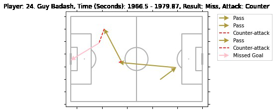
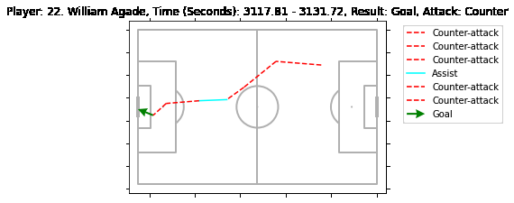

Hapoel Jerusalem: Data to Graphs
What was the problem?
The head coach had hours of match footage but needed to quickly spot the patterns behind scoring chances. Dense XML play-by-play data existed, but there was no fast way to turn it into something useful in a pre-match meeting.
What did I build to solve it?
I wrote a Python script to parse game XML into a Pandas dataframe, then generated graphs visualizing each possession ending in a shot on goal, including dribbles, passes, and shots. Upload a file, get the key moments in seconds.

